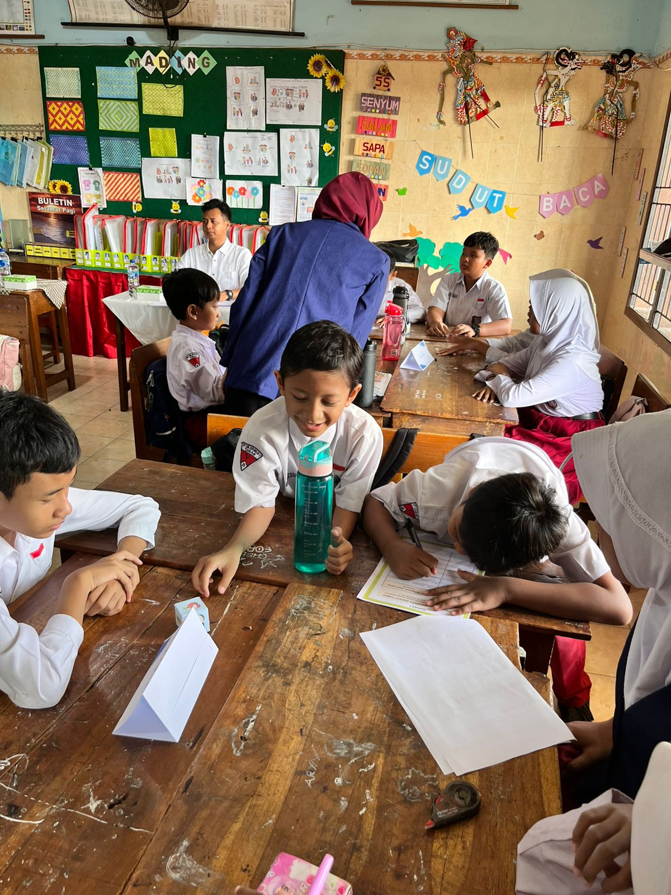
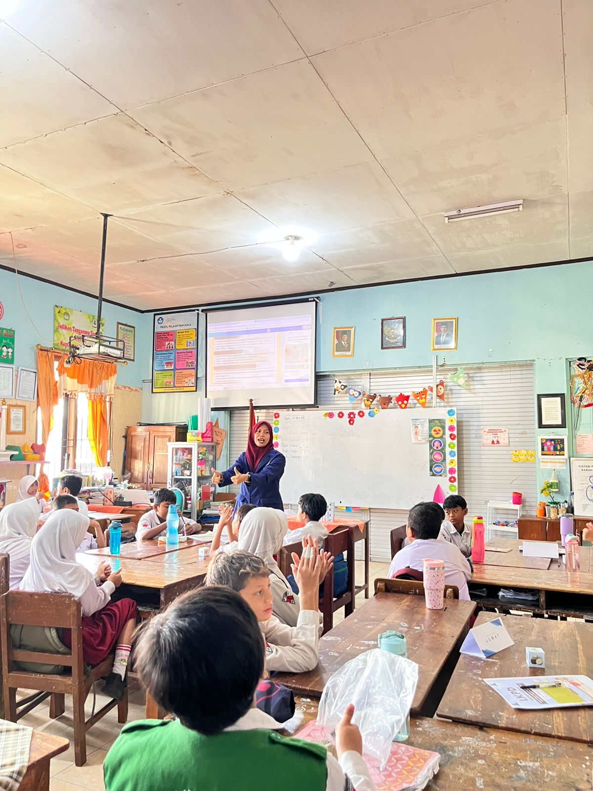
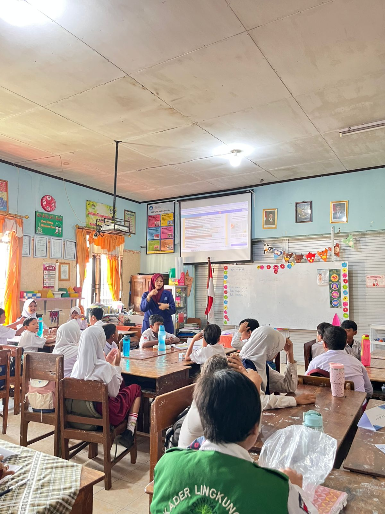
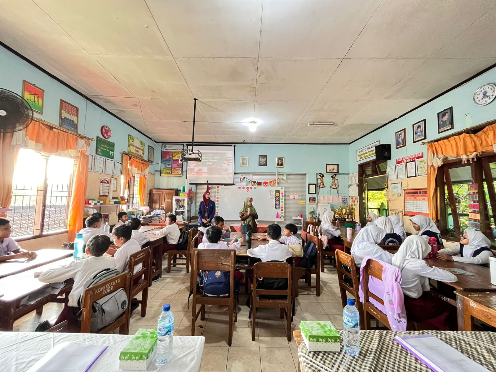

Membangun Guru Profesional dan Pembelajaran Inovatif
Website E-Portofolio ini berisi dokumentasi profil, refleksi akhir, pembelajaran, pengalaman, umpan balik, filosofi mengajar serta pengembangan kompetensi selama mengikuti Program Pendidikan Profesi Guru (PPG).
7+
Isi Portofolio
100%
Pembelajaran Aktif
PPG
Profesional & Inovatif
2026
E-Portfolio Digital
Tentang E-Portfolio
Media dokumentasi digital yang menampilkan perjalanan, pengalaman, dan pengembangan kompetensi selama Program PPG.

PPG Sebagai Langkah Menjadi Guru Profesional
Program Pendidikan Profesi Guru membantu calon guru mengembangkan kompetensi pedagogik, profesional, sosial, dan kepribadian melalui pembelajaran inovatif.
Melalui website ini berbagai dokumentasi pembelajaran, video, refleksi, dan hasil karya peserta didik ditampilkan secara modern dan interaktif.
SelengkapnyaKeunggulan Pembelajaran
Implementasi pembelajaran aktif, inovatif, dan kolaboratif selama Program PPG.
Inovatif
Menggunakan model pembelajaran modern berbasis masalah.
Kolaboratif
Peserta didik aktif bekerja sama dalam kelompok belajar.
Interaktif
Media pembelajaran interaktif dan menyenangkan.
Profesional
Mengembangkan kompetensi guru profesional masa depan.
Galeri Pembelajaran
Dokumentasi kegiatan pembelajaran dan praktik mengajar.




Mari Jelajahi E-Portfolio PPG
Lihat dokumentasi pembelajaran dan pengembangan kompetensi guru profesional.
Mulai Jelajahi